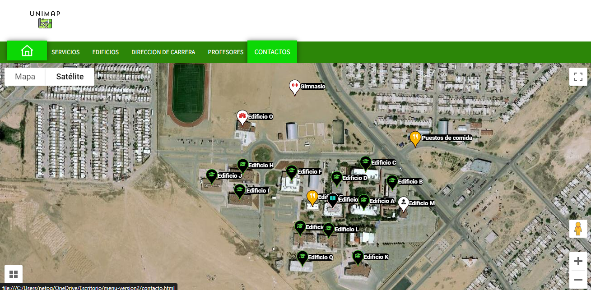

Paso 1: Posiciónate en la pestaña de servicios o cualquier otra pestaña y se te abrirá un submenú. Selecciona la opción que quieres ubicar. Paso 2: Da clic en una de las opciones que quieres ubicar, y en el momento en que le des clic, este te mostrará la ubicación.
Este campo nos sirve para mostrar información adicional sobre un servicio que quieres ubicar, por ejemplo:
Paso 1: Posiciónate en una opción de la barra de opciones y selecciona una de las opciones que te muestran.
Como viste, te llevó a la ubicación de esa opción, pero si quieres más información sobre la opción que escogiste, entonces.
Paso 1: Da doble clic a la opción que seleccionaste.
Los contactos son información sobre los creadores de la página web y sirven por si quieres contactar con uno de ellos para pedir más información o tener dudas sobre la página.
Paso 1: Posiciónate en la pestaña de contactos.

Paso 2: Dale clic y te llevará a una nueva página donde verás la información de los creadores del mapa escolar.
Aquí encontrarás información de los creadores del sitio web y puedes enviarles un mensaje si tienes dudas sobre algo de la aplicación web.
La pestaña de conocenos te muestra un contexto de lo que es unimap y el objetivo para que fue creado y te mostrara un video de la universidad para dar una vista en general de la institucion
La tienda es un carrito de compras donde podrás ver y comprar productos que ofrece la universidad tecnológica, como vasos, camisas, etc.
En la parte superior del mapa, se encuentra un botón. Lo aplastas y te va a dirigir a un punto cercano de donde te encuentras en el mapa.